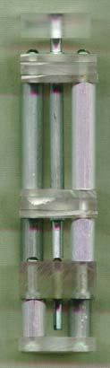
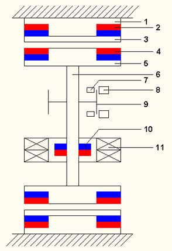
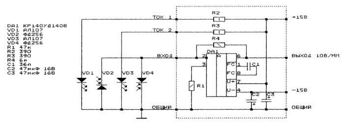
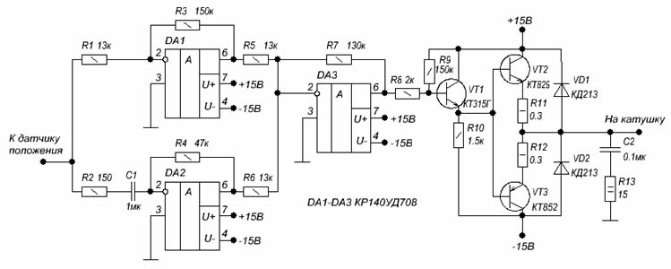
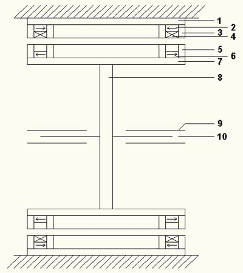
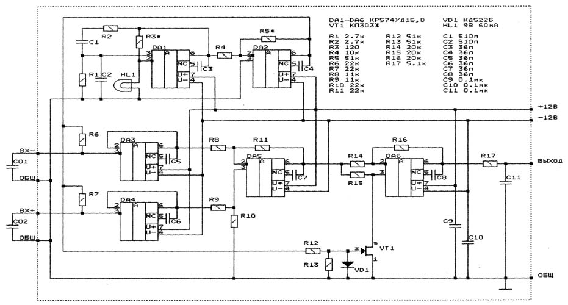
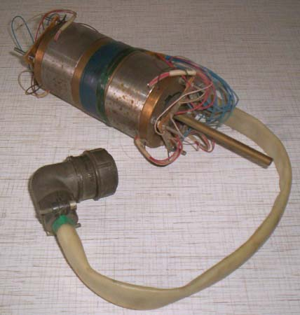
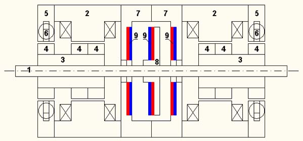
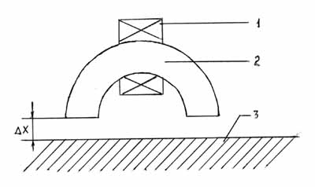
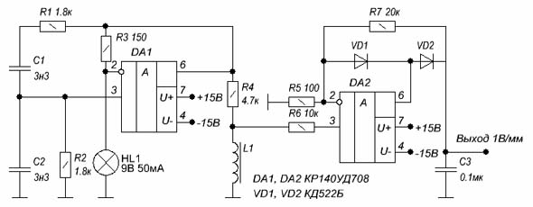

Магнитные подшипники и подвесы
Разработка макетов магнитных подвесов и подшипников преследовала цель изучения их поведения в различных условиях, определения направлений совершенствования конструкции, а также отработки принципа активного управления: датчики положения, электромагнитные приводы, электронные системы управления. Первоначальная работа велась в рамках проекта космической платформы "Регата-Плазма" (СКБ КП ИКИ РАН, г. Таруса), продолжение работ осуществлялось собственными силами и средствами.
На рис. 1 приведена схема простейшего магнитного подшипника с пассивным радиальным [9] и активным аксиальным [1, 6] управлением. С целью предельного упрощения конструкции зазоры между парами аксиально намагниченных и работающих на притяжение магнитных колец выбраны достаточно большими (до 5 мм). Для обеспечения демпфирования по радиальным координатам в зазор между кольцами введены пластины из алюминия толщиной 3 мм (крепятся к статору подшипника). Аксиальную жесткость обеспечивает магнитоэлектрический привод, состоящий из аксиально намагниченного постоянного магнита, укрепленного на оси ротора подшипника и помещенного внутрь пары встречно включенных катушек. Расчет магнитоэлектрического привода может быть сделан с помощью программы M_Drive [3]. Контроль положения по аксиальной координате осуществляется посредством фотоэлектронного датчика положения [5], состоящего из непрозрачной шторки, по обе стороны от которой размещены две оптопары с открытым оптическим каналом (светодиод - фотодиод). На рис. 2 представлена принципиальная схема электронной части фотодатчика. Принципиальная схема системы управления по аксиальной координате приведена на рис. 3. Она включает в себя два звена - пропорциональное и дифференцирующее, что позволяет осуществлять управление и демпфирование по этой координате чисто электронными средствами.

Рис. 1. Макет простейшего магнитного подшипника с пассивным радиальным и активным аксиальным управлением: 1 - основание статора (алюминий), 2 - постоянный магнит (самарий-кобальт, кольцо), 3 - демпфирующая прокладка (алюминий), 4 - постоянный магнит (самарий-кобальт, кольцо), 5 - основание ротора (алюминий), 6 - ось, 7 - светодиод, 8 - фотодиод, 9 - шторка фотодатчика положения, 10 - постоянный магнит магнитоэлектрического привода (самарий-кобальт, кольцо), 11 - катушки магнитоэлектрического привода.

Рис. 2. Схема электрическая принципиальная фотодатчика положения на операционном усилителе КР140УД1408.

Рис. 3. Схема электрическая принципиальная системы автоматического управления магнитным подшипником.
При работе с макетом простейшего магнитного подшипника выявились следующие его недостатки:
С целью частичного устранения этих недостатков был сконструирован магнитный подшипник, показанный на рис. 4. В нем объединены узлы, осуществляющие радиальную и аксиальную стабилизацию подшипника. Поле катушки замыкается через стальной сердечник (обойму), что позволяет существенно уменьшить энергопотребление на единицу аксиального усилия. Кроме того, данная конструкция сводит к минимуму поля рассеяния. В качестве датчика положения использован емкостной датчик [4, 11], представляющий из себя дифференциальный конденсатор, подключенный к схеме, приведенной на рис. 5.

Рис. 4. Макет магнитного подшипника с пассивным радиальным и активным аксиальным управлением: 1 - основание статора (алюминий), 2 - наборное кольцо из постоянных магнитов, 3 - обойма статора (сталь), 4 - катушка управления, 5 - обойма ротора (сталь), 6 - наборное кольцо из постоянных магнитов, 7 - основание ротора (алюминий), 8 - ось, 9 - неподвижная пластина дифференциального конденсатора емкостного датчика положения, 10 - подвижная пластина конденсатора.

Рис. 5. Схема электрическая принципиальная дифференциального емкостного датчика положения [4, 11] магнитного подшипника.
При работе с данным макетом было обнаружено недостаточное пассивное демпфирование по радиальным координатам, что приводит к возникновению радиальных колебаний. Способ борьбы с этим недостатком: введение узла активного или пассивного демпфирования.
С учетом опыта работы по вышеописанным макетам был сконструирован макет магнитного подшипника с активным радиальным [1, 6] и пассивным (для упрощения конструкции) аксиальным [9] управлением. Внешний вид подшипника показан на рис. 6, а схема конструкции в разрезе - на рис. 7.

Рис. 6. Внешний вид макета магнитного подшипника с активным радиальным и пассивным аксиальным управлением.

Рис. 7. Схема конструкции макета магнитного подшипника с активным радиальным и пассивным аксиальным управлением в разрезе: 1 - ось, 2 - статор с обмотками привода (сталь), 3 - насадка (бронза), 4 - ферромагнитные кольца, 5 - обойма индуктивных датчиков положения, 6 - индуктивные датчики положения, 7 - обойма статора (бронза), 8 - втулка (бронза), 9 - постоянные магниты (самарий-кобальт, кольца).
В качестве датчиков положения по радиальным координатам использованы восемь индуктивных датчиков положения [7]. Конструкция индуктивного датчика показана на рис. 8, а схема электронного преобразователя - на рис. 9. Система автоматического управления 4-х канальная, схема каждого канала аналогична показанной на рис. 3. Пассивное аксиальное управление построено на основе трех кольцевых магнитов, расположенных вдоль главной оси. Средний магнит крепится на роторе, крайние - на статоре. Направление намагниченности аксиальное: у магнитов статора - в одну сторону, у магнита ротора - в противоположную. Перемещение ротора вдоль главной оси приводит к увеличению силы отталкивания, возвращающей ротор в исходное положение.

Рис. 8. Конструкция индуктивного датчика положения ротора магнитного подшипника: 1 - обмотка (100 витков ПЭВ-2 0.05 мм), 2 - ферритовый сердечник (половина кольца К7х4х2 600НН), 3 - ферромагнитный ротор магнитного подшипника.

Рис. 9. Схема электронного преобразователя для индуктивного датчика положения ротора магнитного подшипника: на микросхеме DA1 (КР140УД708) собран генератор синусоидального сигнала частотой около 20 кГц, на микросхеме DA2 (КР140УД708) - детектор переменного напряжения, снимаемого с обмотки датчика L1.
В ряде случаев можно отказаться от активного управления, использовав механическую опору, обеспечивающую равновесие по соответствующей координате. На рис. 10 показан макет подобного устройства, состоящего из вала с двумя пассивными радиальными магнитными подшипниками.

Рис. 10. Макет устройства с двумя пассивными радиальными магнитными подшипниками.
Каждый из подшипников состоит из двух постоянных магнитов - наружного кольцевого и внутреннего цилиндрического, намагниченных аксиально [9]. Для того, чтобы обеспечить устойчивость вала в осевом направлении, использована шаровая опора. С помощью регулировочного винта можно выставлять положение магнитов друг относительно друга таким образом, чтобы максимально уменьшить нагрузку на опору и снизить момент силы трения.
Намагничивание постоянных магнитов, использованных в макетах магнитных подшипников и подвесов, осуществлялось в установках намагничивания [8, 10].
По вопросу расчета и разработки конкретных конструкций магнитных подшипников и подвесов обращайтесь к автору (раздел Контактная информация).
Ссылки:
03.10.2003
09.09.2005
27.10.2005
27.12.2006
12.05.2008
09.03.2010
Альтернативные источники
энергии
Компьютеры и
Интернет
Магнитные поля
Механотронные системы
Перспективные
разработки
Электроника и
технология